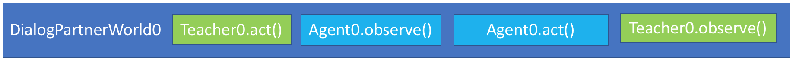
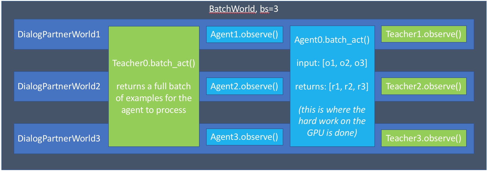

Data Handling, Batching, and Hogwild¶
Authors: Alexander Holden Miller, Kurt Shuster
Note
If you are unfamiliar with the basics of displaying data or calling train or evaluate on a model, please first see the getting started section. If you are interested in creating a task, please see that section.
Introduction¶
This tutorial will cover the details of:
With relatively small modifications to a basic agent, it will be able to support multithreading and batching. If you need extra speed or are using a very large dataset which does not fit in memory, we can use a multiprocessed pytorch dataloader for improved performance.
First, let’s consider a diagram of the basic flow of DialogPartnerWorld, a simple world with two conversing agents.
The teacher generates a message, which is shown to the agent. The agent generates a reply, which is seen by the teacher.
Hogwild (multiprocessing)¶
Hogwild is initialized in the following way:
We set up a starting instance of the world: that is, we use
create_taskto set up a base world with the appropriate agents and tasks.We pass this world to a
HogwildWorld, which sets up a number of synchronization primitivesWe launch
numthreadsthreads, each initialized from ashare()’d version of the world and the agents therein.Once these threads and their world copies are all launched, we return control back
Now that this world is set up, every time we call parley on it, it will release one of its threads to do a parley with its copy of the original base world.
There’s some added complexity in the implementation of the class to manage synchronization primitives, but the Hogwild world should generally behave just like a regular World, so you shouldn’t need to worry about it. If you do want to check out the implementation, look for HogwildWorld in the core/worlds.py file.
Sharing needs to be implemented properly within all these agents and worlds so all the proper information is shared and synced between the threads. We’ll take a look at the common setup needs for each of those.
Hogwild Teachers¶
The default setup for teachers include creating a Metrics object to track
different metrics, including the number of examples shown, accuracy, and f1.
The default share() method automatically sets up a thread-safe version of
these metrics if needed–children can go ahead and access these metrics as normal.
Teachers using dynamic data can most likely proceed as normal, without syncing any information outside of the metrics class. However, fixed datasets need mechanisms built in to make sure that they don’t do validation or testing examples more or less than once to ensure consistent results.
Fortunately, the FixedDialogTeacher has this all built in already, so merely extending that class provides all the needed functionality.
Hogwild Models¶
For models using hogwild training, the primary concern is to share a thread-safe version of the model. This process will vary based on which framework you’re using, but we’ll include a few tips for PyTorch here.
First, check out the best practices here: http://pytorch.org/docs/master/notes/multiprocessing.html
The primary things to remember are
1. call model.share_memory() and include your model in the share() function
2. make sure to switch the multiprocessing start method if CUDA is enabled
You can see an example of this in the Starspace model. This model uses multiple CPU threads for faster training, and does not use GPUs at all.
Showing only the code relevant to model sharing, we see:
def __init__(self, opt, shared=None):
if shared:
torch.set_num_threads(1) # otherwise torch uses multiple cores for computation
self.model = shared['model'] # don't set up model again yourself
else:
self.model = Starspace(opt, len(self.dict), self.dict)
self.model.share_memory()
def share(self):
shared = super().share()
shared['model'] = self.model
return shared
Batching¶
Batching is set up in the following way (the first step is the same as Hogwild):
We set up a starting instance of the world: that is, we use
create_taskto set up a base world with the appropriate agents and tasks.We pass this world to a
BatchWorld.We create
batchsizeworlds, each initialized from ashare()’d version of the world and the agents therein.
Now, every time we call parley on this BatchWorld, we will complete batchsize examples.
Note that this is different than the behavior of HogwildWorld, where only a
single example is executed for each call to parley.
Note
So far, our diagram is exactly the same as Hogwild. We’ll see how it can
change below when agents implement the batch_act function
(as GPU-based models will).
There’s a few more complex steps to actually completing a parley in this world.
Call
parley_initon each shared world, if the world has it implemented. Most classes don’t need this–we currently only use it for ourMultiWorld, which handles the case when one specifies multiple separate tasks to launch (e.g. “-t babi,squad”). This does any pre-parley setup, here choosing which sub-tasks to use in the next parley.Then, iterate over the number of agents involved in the task. For most tasks, this is just two agents: the teacher (task) and the student (model). For each agent, we do two steps:
Call
BatchWorld.batch_act(). This method first checks if the original instance of the agent (not the copies) has a function namedbatch_actimplemented and does not have an attributeuse_batch_actset toFalse. This function is described more below. If condition is not met, the BatchWorld’sbatch_actmethod iterates through each agent copy in the batch and calls theact()method for that instance. This is the default behavior in most circumstances, and allows agents to immediately work for batching without any extra work–the batch_act method is merely for improved efficiency.Call
BatchWorld.batch_observe(). This method goes through every other agent, and tries to call theobserve()method on those agents. This gives other agents (usually, just the one other agent) the chance to see the action of the agent whose turn it is to act currently.
Next, we’ll look at how teachers and models can take advantage of the setup above to improve performance.
Batched Models¶
Finally, models need to be able to handle observations arriving in batches.
The first key concept to remember is that, if the model agent implements
batch_act(), act will not be called as long as batchsize > 1.
However, copies of the agent will still be created, and the observe method
of each one will be called. This allows each copy to maintain a state related
to a single row in the batch. Remember, since each row in the batch is represented
by a separate world, they are completely unrelated. This means that the model
only needs to be set up in the original instance, and need not be shared with
its copies.
The observe() method returns a (possibly modified) version of the observation
it sees, which are collected into a list for the agent’s batch_act() method.
Now, the agent can process the entire batch at once. This is especially helpful for GPU-based models, which prefer to process more examples at a time.
Tip: if you implement batch_act(), your act() method can just call batchact()
and pass the observation it is supposed to process in a list of length 1.
Of course, this also means that we can use batch_act in both the task and the agent code:
Multiprocessed Pytorch Dataloader¶
When a dataset is very large, or requires a lot of preprocessing before a model
can use it, you can use our PytorchDataTeacher, which utilizes multiprocessed
dataloading for streaming data from disk (rather than loading it into memory).
That system can take your task as input, and make it fast to load, or you can
roll your own specific setups if you need more control.
For large datasets, where it is best to stream from disk during training rather than load initially into memory, we provide a teacher that utilizes pytorch data loading.
(Note: the module here contains all of the code discussed in this tutorial)
Pytorch Dataloading Intro¶
A Pytorch DataLoader is a dataloading mechanism that provides multiprocessed
loading of data from disk (as described here).
A DataLoader can be initialized with a variety of different options; the only
ones that concern us are dataset and collate_fn.
The dataset is a
Pytorch Dataset (as described here),
which is a class that implements two functions: __getitem__(self, idx) and __len__(self).
As is readily apparent, the __getitem__ method is given an idx and returns the
data item at that idx, while the __len__ method returns the length of the underlying dataset.
With a dataset, the DataLoader then takes care of everything else.
The collate_fn is simply a way of formatting a batch of returned data items;
Pytorch provides a default collate_fn that turns data into tensors, but there
are many ways that one could want to batch data from the Dataset.
Pytorch Dataloading in ParlAI¶
Implementation¶
The PytorchDataTeacher
provides two default Datasets and a default collate_fn as specified above.
1. StreamDataset - this is the Dataset that we provide to the
DataLoader when --datatype is set to [train|valid|test]:stream.
The dataset is meant for streaming data - that is, data that
does not need to (or cannot) be loaded into memory before starting training, e.g.
datasets with millions of text examples, or datasets with thousands of images.
__getitem__(self, idx)returns(index, ep), whereindexis the
idxargument, andepis the episode at that index in the dataset.
__len__(self). returns the length of the dataset.
2. ParlAIDataset - when stream is not in the --datatype, ParlAI defaults
to this Dataset, which provides random access into the dataset. Its __getitem__
and __len__ methods are functionally the same as the StreamDataset.
3. default_collate - this function simply returns a list of (index, ep)
pairs as they are returned from the __getitem__ function above.
How to Use¶
The PytorchDataTeacher can be used with any dataset/task currently provided
on the ParlAI platform. There are two ways you can utilize the PytorchDataTeacher
for your specific task. One involves using the ParlAIDataset or StreamDataset that we have
provided; the other involves writing your own dataset. Each will be covered
step by step below. The important thing to know is that in the first case you only
need to write a teacher; in the second case, you only need to write a Dataset.
PyTorch ParlAIDataset/StreamDataset¶
1. Ensure that there is an appropriate teacher that already exists, which can read the data saved on disk and produce an action/observation dict for any agent.
2. Build the data such that it can be used by the ParlAIDataset or StreamDataset. There
are two ways of doing this:
Run the following command:
python examples/build_pytorch_data.py -pyt <TEACHER> --datatype <DATATYPE>The following are the parameters to specify:
-pyt/--pytorch-teacher-task- This is simply the teacher of the task that youare using with the
PytorchDataTeacher
--datatype- This is one oftrain, valid, test, depending onwhat data you would like to use.
(Recommended) Simply run
examples/train_model.pywith the same arguments listed above; this will build the data first before running the training loop. (Important) If you’d like to use theStreamDataset, specify e.g.-dt train:stream, otherwise the teacher will default toParlAIDataset
3. (Preprocessing) Sometimes, the preprocessing for the agent takes a considerable
amount of time in itself, and you want the data to simply be loaded preprocessed.
If you specify the --preprocess command line argument to be true, then
the model/agent specified in the command line parameters will have its observe
function called on each example; the data will then be saved for use specifically
with that model (setting this flag to true and then using another agent
will result in the data needing to be rebuilt).
Finally, specify the task with
-pytinstead of-t
Example
The following is an example of how the above steps could be applied to
use this teacher with the bAbI dataset:
1. The bAbI teacher (Task1kTeacher) is implemented such that it can
read the bAbI data, and provide an action/observation dict to send to the agent.
2. Suppose the Task1kTeacher teacher sets its self.datafile to the
appropriate datafile. Also, suppose we want the seq2seq model to preprocess the data before we save it.
Then, you can build the pytorch data with one of the following commands:
(Build before training):
python examples/build_pytorch_data.py -m seq2seq -pyt babi:task10k:1 --pytorch-preprocess trueRecommended:
python examples/train_model.py -pyt babi:task10k:1 -m seq2seq --pytorch-preprocess true
3. To specify a datafile rather than using the self.datafile attribute,
e.g. the validation set file, simply add the following:
--datafile data/bAbI/tasks_1-20_v1-2/en-valid-10k-nosf/qa1_valid.txt
Your Own PyTorch Dataset¶
1. To use your own method of retrieving data (rather than the streaming data option),
you can simply subclass the Pytorch Dataset class (as specified here).
You can add this class anywhere you would like; a good place would be in the
agents.py file for the task you are writing a Dataset for.
2. (Optional) The default collate_fn that will be used is the one
specified above in the PytorchDataTeacher. If you would like to specify your
own collate_fn, you can implement a static method collate in the agent
to which you will be providing the data. This function takes one argument, batch, which
is a list of data items returned by your custom Dataset, and returns a
collated batch. Alternatively, you can also implement the method in the dataset.
3. Finally, instead of setting -t on the command line, you need to specify the Dataset
with -pytd: -pytd dataset_task:DatasetClassName``, where
dataset_class is the agents file where your Dataset is written. If you
name your custom dataset DefaultDataset, then you do not need to specify the
DatasetClassName.
Example
An example of the above method is used for the VQA V1 task, with the
mlb_vqa agent. Here is how it works in this example:
1. In the VQA V1 agents file,
there exists a VQADataset, which subclasses Dataset (with the appropriate __len__ and __getitem__ methods).
2. In the MLB VQA model file,
there is an implementation of collate that returns a processed batch of examples from the
list of examples provided by the VQADataset.
3. Finally, to use the PytorchDataTeacher with the custom Dataset and
collate, run the following command:
python examples/train_model.py -m mlb_vqa -pytd vqa_v1
PyTorch Batch Sorting and Squashing¶
One of the benefits of using the StreamDataset described above when
using the PytorchDataTeacher is that you can achieve the benefits of
batch sorting and squashing (that is, reducing padding in batches by
providing the models with similarly sized batches) without having
to load the whole dataset into memory. We provide an on-the-fly
batch sorter that uses aggressive caching to create and provide
batches of similarly sized examples to models nearly as quickly (if not as quickly) as
can be provided without sorting.
To use the batch sorting method, just specify the following command line argument:
-pybsrt- set this parameter totrueto enable batch sorting
Additional arguments that may be of interest to you:
1. --batch-sort-field - this specifies the field on which the examples will
be sorted into batches. The default is ‘text’, and thus batch sorting will
return batches with similarly sized ‘text’ fields.
2. --batch-length-range - this indicates the degree of variation allowed in
a batch; e.g., by how many characters each example in a cache will, at most, deviate.
A --batch-length-range of 5 would mean that each example in the batch
would differ by no more than 5 characters (in a text-based dataset).
Explanation and Benefits of Batch Sorting¶
Batch sorting can help training by reducing the amount of zero-padding in tensors constructed from batches of text. This technique alone sped up the time to train on a single epoch of WMT De-En with a simple convolutional architecture by approximately 4x. See this paper for an analysis of the impact of different strategies on speed and convergence.
In order to reduce the zero-padding in examples, the PytorchDataTeacher
squashes episodes into a single example
if there are multiple examples in each episode. For every example
in an episode, a separate squashed episode will be created from the examples up
to and including the current example.
The squashing can be controlled by two command-line arguments, which set whether the labels are included in the squashing (you want them for dialog, but you might not for question-answering), as well as how many examples from the past should be included.
- param pytorch-include-labels
(bool, default True) whether to include labels in the context.
- param pytorch-context-length
(int, default -1) how many past examples in the episode to include in the context for the current one. default -1 is all. note that some datasets have very long episodes (e.g. OpenSubtitles has episodes with hundreds of examples), so setting context-length to a smaller value can limit the context to an approachable amount of information for the model as well as limiting memory usage.
After doing the squashing, the PytorchDataTeacher will return
batches where each batch contains examples of similar size (where size is determined
by the number of spaces in the example).
Let’s look at a quick example to make sure the flattening is clear.
Consider the following “conversation”, where the x’s represent ‘text’ fields
and the y’s represent labels in a continuous conversation between two agents.
x1 y1
x2 y2
x3 y3
x4 y4
Without batching, these examples will be presented to the agent over four parleys:
{'text': x1, 'labels': [y1], 'episode_done': False}
{'text': x2, 'labels': [y2], 'episode_done': False}
{'text': x3, 'labels': [y3], 'episode_done': False}
{'text': x4, 'labels': [y4], 'episode_done': True}
Using the flattening strategy above, with pytorch-context-length set to -1 and
pytorch-include-labels set to False (not recommended for conversations),
in separate rows of a batch we’d get:
{'text': x1, 'labels': [y1], 'episode_done': True}
{'text': x1 + x2, 'labels': [y2], 'episode_done': True}
{'text': x1 + x2 + x3, 'labels': [y3], 'episode_done': True}
{'text': x1 + x2 + x3 + x4, 'labels': [y4], 'episode_done': True}
If we change pytorch-context-length to 3 and pytorch-include-labels to True:
{'text': x1, 'labels': [y1], 'episode_done': True}
{'text': x1 + y1 + x2, 'labels': [y2], 'episode_done': True}
{'text': x2 + y2 + x3, 'labels': [y3], 'episode_done': True}
{'text': x3 + y3 + x4, 'labels': [y4], 'episode_done': True}
PytorchDataTeacher Multitask Training¶
The PytorchDataTeacher can be used with mutltitask training in a very similar
way to the standard ParlAI multitasking. There are three simple ways of doing this.
1. If you do not have any Datasets written for the specified tasks, simply
write -pyt <task1>,<task2>,... on the command line. For example, you could
run the following command to multitask on SQuAD and bAbI:
python examples/train_model.py -pyt squad,babi:task1k:1 ...
2. If you only have Datasets written for the specified tasks, simply write
-pytd <dataset1>,<dataset2>,.. on the command line. For example, you could
run the following command to multitask on COCO Captioning and Flickr30k:
python examples/train_model.py -pytd coco_caption,flickr30k ...
3. If you have a mix of Datasets and regular teachers, you can specify
the Datasets after the -pytd flag and the regular teachers after the
-pyt flag. For example, if you wanted to multitask train on SQuAD and
Flickr30k, you could run the following command:
python examples/train_model.py -pytd flickr30k -pyt squad